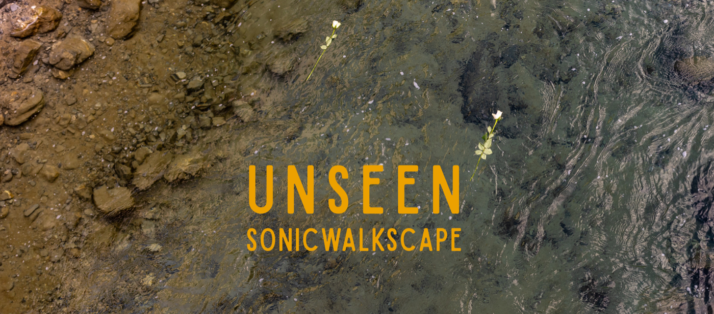

Click to download BANDITE’s app Sonic WalkScape · Scarica l’app di Bandite

Cuffie o auricolari da collegare al tuo smartphone.
Telefono con batteria carica.
Scarpe e abiti adatti per un itinerario di montagna: controlla sempre il meteo prima di partire, il bollettino delle allerte valanghe, e in caso di neve assicurati di avere scarpe alte ed eventualmente bacchette e ciaspole.
– Scarica l’app Sonic WalkScape: scannerizza il QR code che trovi sul primo cartello a Monginevro o clicca sui pulsanti qui sopra per accedere al tuo Apple Store o Play Store.
– Entra nell’app e accedi alle impostazioni cliccando sulla rotellina in alto a destra: seleziona la lingua di preferenza, e attiva la geolocalizzazione del tuo dispositivo.
– Torna all’homepage e inizia ad esplorare: cerca e seleziona dalla mappa la Sonic WalkScape che vuoi fare, cliccando su UNSEEN o PRESENTI MAI ASSENTI.
– Ora Inizia Tour – seleziona lingua, sottotitoli (sono presenti registrazioni in lingua italiana, francese e inglese), e fai il download del tour (per l’uso anche offline).
– Prima di iniziare è importante cliccare sulle finestre di autorizzazione per l’uso dei dati di posizione del tuo telefono (gps): clicca su consenti sempre.
– Vai vicino al punto di partenza del tour: per Unseen arriva al parcheggio Chalmettes, poi continua a camminare fino al parco avventure Games in forest, facendo attenzione al passaggio che attraversa le piste da sci. Assicurati di seguire il percorso e raggiungere i punti indicati sulla mappa, fino alla conclusione dell’itinerario presso il villaggio di La Vachette.
Al termine della Sonic WalkScape troverai sull’app le indicazioni per i bus che ti riportano a Monginevro (è possibile fare il biglietto a bordo – costo di 2,20€).
Puoi lasciare un feedback sull’app e seguirci sui nostri canali social, o iscriverti alla nostra newsletter.